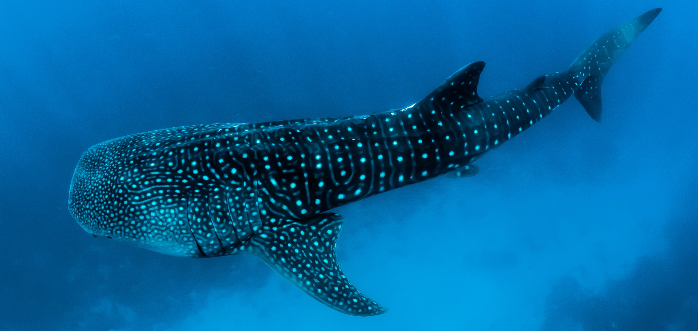

Current Research
National Oceanic and Atmospheric Administration (NOAA) Office of Ocean Exploration and Research (OER) Intern - summer 2021
This summer I am an intern with NOAA OER. The project title is "Investigating the relationship between water column acoustic backscatter and pelagic fauna" and to do this, I will be utilizing acoustic, remotely operated vehicle (ROV), and satellite data.
I will also be participating as a scientist from shore for the Okeanos Explorer expedition EX21-03. This will occur during the week of June 21.
Regions of genetic divergence in depth-separated Sebastes rockfish species pairs
This research was submitted to a journal for review. Click on the title for the PA AFS copendium.
Peer-Reviewed Publications
Girasek, Q.L., Schields B., Buonaccorsi V.P., Matter J.M. 2021. Phylogenetic Identification of North American Ratsnakes (Pantherophis spp.) in Central Pennsylvania, USA. Herpetological Review. 52: 17-20
Radford, K. D., Spencer, H. F., Zhang, M., Berman, R. Y., Girasek, Q. L., Choi, K. H. 2020. Association between intravenous ketamine-induced stress hormone levels and long-term fear memory renewal in Sprague-Dawley rats. Behavioural brain research, 378, 112259
Other Published Projects
PA AFS Workshop (Spring 2021)
Link here: https://rpubs.com/QuinnGirasek
In RStudio, I created an interactive map looking at data on the northern snakehead and blue catfish in the Lower Susquehanna River. Both species are invasive to the region.